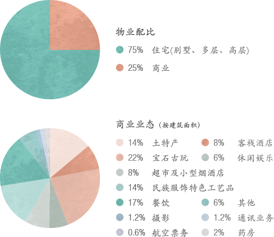

旅游小镇是什么
旅游小镇是什么―概念
旅游小镇即旅游特色小镇，是依托区位、自然资源、人文资源、特色产业、特色社区等优势发展旅游产业，并使之与其他相关产业、居住社区、其他旅游区（或风景区）发生交互关系的特定区域。
旅游小镇有何特点―特征辨析
产业特征
功能特征
规模体量
形态特征
特色小镇VS旅游小镇特征比对
| 特色小镇 | 旅游小镇 | |
|---|---|---|
| 产业 | 涵盖范围广，核心锁定最具发展基础、发展优势和发展特色的产业 | 旅游产业是小镇的核心产业、主导产业或最具潜力/特色产业 |
| 功能 | “产业、文化、旅游、社区” 一体化的复合功能载体 | 旅游功能是必备功能，可兼有其他功能 |
| 规模 | 视产业规模而定 | 视产业规模而定 |
| 形态 | 行政建制镇，或边界明确的非镇非区非园空间，或聚落空间/集聚区 | 小城镇，风景区、产业园、旅游区（景点）集合地，或综合体及非行政建制小镇 |
旅游小镇怎么玩
发展模式
通过对浙江、湖南、贵州等地的旅游小镇进行统计研究，根据旅游产业在旅游小镇中的产业地位，确定旅游小镇发展三大模式：“旅游聚焦”模式、“旅游+”产业模式、“产业+”旅游模式。
模式一：“旅游聚焦”模式
- 产业特征：旅游业是小镇的核心产业，是小镇经济发展的核心主动力。
- 功能特点：国内传统古镇、第一批旅游小镇大多属于此类，观光、休闲、旅游接待服务功能发展较早，也是目前此模式下小镇的主体功能，随着小镇建设升级，体验、商业、养生、度假等功能逐渐丰富。
- 开发模式：主体模式―政府与企业合作成立旅游开发公司共同开发，“政府直接开发管理”模式与“企业自主开发运营”模式相对较少，前者如汤口小镇、后者如乌镇。
- 盈利模式：“门票+旅游经营性收入”为主，门票多在百元以上。
- 适配条件：旅游资源（含可用于旅游开发的自然、人文资源）富集或旅游区位优势明显之地。
古北水镇
京郊罕见的山水城结合的自然古村落，是典型的北方旅游度假小镇
- 项目区位：古北水镇位于北京市密云县古北口镇，背靠中国最美、最险的司马台长城，坐拥鸳鸯湖水库，是京郊罕见的山水城结合的自然古村落。与河北交界，距离北京市1.5小时，距离承德市约45分钟车程。
- 项目规划：拥有43万平方米精美的明清及民国风格的山地四合院建筑，含2个五星级酒店，6个小型精品酒店，400余间民宿、餐饮及商铺，10多个文化展示体验区及完善的配套服务设施。
- 项目特色：具有悠久的历史，是在原有守卫长城军民混建而居的古堡基础上发展起来，其现存的“司马台古堡”是北京市重点文物保护单位，“长城+古镇”是罕见的雄伟自然、文化景观混合在一起的历史人文风景区。
- 项目定位：“观光+休闲+度假+会议”功能于一体的复合型景区。
- 营销策划：以北京、华北地区为主，全球营销。
开发基础
开发基础好，乌镇的设计经验和整体运营开发成为古北水镇项目的品质保证
- 资源优势：古北口镇紧邻京承高速，古北口景区素有小承德之称，司马台、雾灵山等为燕郊观光型景区，本身已经具备近郊旅游基本的观光及度假元素。
- 市场广阔：北京短途休闲旅游潜在市场规模约为5000万人次/年，而其周边缺乏优秀休闲旅游目的地，休闲市场广阔。
- 政策支持：2012年，获得密云县财政局4100万元基础建设补贴，参与古北项目融资的京能集团也是北京市政府的全资子公司。
- 渠道完备：可利用中青旅本身的旅行社资源来引导团队游客，中青旅是国内规模最大的商务会议旅游服务商，会议旅游客源广。
开发基础优越
规划布局
景区主体+司马台长城，各有千秋的景区组合
开发历程
签署正式战略合作协议 07.16，成立项目
公司、项目筹备 一期土地获取、开建；
11月，二期土地获取 项目建设期 10月，一期试营业 元旦，一期开业
功能分区
景区沿主一路呈东北-西南向条带状分布；古镇与保护区严格分离，古北水镇包含景区主体和司马台长城两大板块；其中，景区主体主要包括以下四大板块：民国街区、水街历史风情区、卧龙堡民俗文化区、汤河古寨区。
开发运营
开发模式、投资运营团队等多方面深度复制乌镇模式
开发模式
借鉴乌镇，以“整体产权开发、复合多元运营、度假商务并重、资产全面增值”为核心，“观光与休闲度假并重，门票与经营复合”，实现“高品质文化型综合旅游目的地建设与运营”。
- 开发主体：以旅游公司主要股份的，集政府、企业和基金公司为一体开发主体。通过集合中青旅公司的旅游资源、IDG（创业基金）的资金实力和政府的政策实力整合在一起，此三驾马车共同推动古镇开发。
- 经营主体：中青旅通过增资控股古北水镇旅游公司。
开发措施
确定设立司马台长城保护专属区和旅游专属区，保护区与旅游区严格隔离。
景区塑造：整旧如故，腾龙换鸟、古镇现代化。具体的做法可归纳为“迁、拆、修、补、饰”五个字。
对于这里的原住居民，被安置在古镇外围，原有住房全部作为商业开发，用作酒店、餐饮、商业，而原主居民可以优先返回到古镇参与旅游服务行业中。
股权结构
中青旅主导，先后引入乌镇旅游、IDG、北京和谐成长投资和京能集团等战略投资。
中青旅直接控股25.8%，并通过乌镇间接持有15.48%的股权，实际权益比例36%（25.81%+15.48%*66%）。
| 股东 | 注册资本出资（万元） | 所占百分比 |
|---|---|---|
| 中青旅控股股份有限公司 | 33600 | 25.81% |
| 乌镇旅游股份有限公司 | 20160 | 15.48% |
| IDG | 32000 | 25.58% |
| 北京和谐成长投资中心（有限合伙） | 18400 | 14.13% |
| 北京能源投资（集团）有限公司 | 26040 | 20.00% |
资料来源：古北水镇2014运营报告
商业模式
观光与度假并重、门票与景区内二次消费复合经营的商业模式
商业模式
商业业态主要分两种：
一是散状分布的特色小吃、书店、服装等店铺，此类店铺多集中在民宿周边，通过购物加深游游客对水镇风情的情感体验。
二是老北京特色商业街商铺，此为古北水镇最大的特色。开发公司负责所有经营权的审批，整体管控。并吸纳原住民作为公司工作人员，解决其收入，客栈及店铺是主要就业领域。
酒店分类
商业业态主要分两种：
一类为民宿，即民居，通过对其的整体改造，形成准4星标准的度假酒店，以客栈命名，由开发公司统一经营管理，工作人员为原住居民，公司给予他们餐饮的经营权，并严格控制经营规模。工作人员需要对客房进行打扫和清洁服务，以此盘活民宅，提高就业率，发挥原住民的服务意识。
另一类为标准的4、5星酒店，提供高端的商务配套，满足商务客的需求，成为商务会议，公司年会的不二场所。
盈利构成
当前项目主要收入来源：门票+旅游经营收入
盈利构成
项目一期主要包括水街、1个五星级酒店，1-2会所，部分民宿，司马台长城（包括上长城的索道），还有一些民俗馆等。二期预计以旅游度假公寓住宅为主。因此，当前项目的主要收入来自门票+旅游经营收入。
| 区域类型 | 投资内容 | 营业渠道及资产 | 产权归属 |
|---|---|---|---|
| 保护专属区 | 1.对古长城及各遗存地点大环境整治； | 索道 | 公司 |
| 2.主体适度修复； | ― | 当地政府 | |
| 3.建设游览路线设施。 | ― | ― | |
| 旅游专属区 | 1.景点（民俗特色展示） | 古长城保护费 | 古长城保护基金 |
| 统一门票 | 公司 | ||
| 2.酒店、特色民宿 | 客房收入 | 公司 | |
| 3.商业业态（含自营或出租） | 销售收入 | 公司 | |
| 4.各类配套娱乐设施（自营或出租） | 销售收入、租金 | 公司 | |
| 5.大环境营造（区内道路、水域、绿化） | ― | 公司 | |
| 6.公共配套设施（游客中心、厕所、区内电力、供排水、有线电视、供热等） | ― | 公司 | |
| 区域内外 | 旅游地产项目（待确定） | 房产销售收入 | 公司 |
模式二：“旅游+”产业模式
- 产业特征：旅游业是小镇的主导产业，在其带动促进作用下，健康产业、旅游地产、文创产业等其他相关产业蓬勃发展。
- 功能特点：国内新近发展的小镇大多属于此类，其初级的观光功能相对弱化，休闲、体验、商业、养生、度假、文创、商务等功能绽放亮点并成为核心吸引点。
- 开发模式：企业自主开发运营模式占绝对主体。
- 盈利模式：旅游收入+产业收入，其中旅游收入大多以“门票+旅游经营性收入”为主，总体占比依旧较高。
- 适配条件：适用于旅游基础条件较好或市场消费能力较强的区域。
彝人古镇
古建筑为平台、彝族文化为“灵魂”，旅游文化与商业住宅相结合，成为新古镇开发的典范
- 概况：位于云南楚雄市经济技术开发区。
- 规模体量：总占地约3161亩，总建筑面积150万平方米，总投资32亿元。
- 总体定位：大众消费型民俗旅游商业街区，昆明的后花园、“滇西旅游黄金线”上的第一站。
- 项目特色：以古建筑为平台、彝族文化为“灵魂”，集商业、居住和文化旅游为一体的大型文化旅游地产项目。
- 市场定位：中端团体休闲度假、旅游观光游客。
- 收益：自2006年开街以来，旅游人数和收入直线增长。2008年游客量250万人次，收入1.6亿元；2010年达到710万人次。
建设布局
项目整体设计、分期实施，以路网和水系形成“中间商业、两侧住宅”的商住分区格局
布局特点：利用威楚大街和两条水系形成“中间商业、两侧住宅”的商住分区格局。
分期特点：以特色旅游商业激活片区活力，通过住宅实现价值最大化 。
- 前期是以开发旅游商业为主，辅以别墅、院落等住宅物业。
- 中期主要发展住宅物业，其中4期以商业为主，实现商住联动。
- 后期主要开发相关配套，进一步提升土地价值。
| 分期 | 规模体量 | 物业类型 | 具体产品 | 商业业态 |
|---|---|---|---|---|
| 1-2期 | 占地243亩，总建15.9万平方米 | 以商业为主，部分别墅 | 28个苑、1间四星级酒店、5间小型客栈 | 珠宝玉石街、烧烤小吃街、酒吧街 |
| 3-7期 | 3期占地200多亩 | 除商铺外包括大量多层及别墅住宅 | 彝人部落、清明河、彝人东区等 | 三期：古风客栈群，特色小吃街，大型餐饮区、演艺一条街等 四期：韩国城，特色酒吧及休闲娱乐吧 |
| 8-9期 | ― | 区域整体配套 | 医院、幼儿园 | ― |
开发模式
彝族文化与商业有机融合形成特色吸引，地产物业建设随之上马
旅游商业驱动片区开发，住宅占比近70%
情景化、商业化、活动化体验
| 体验类型 | 具体内容 |
|---|---|
| 建筑景观 | 建筑立面、街巷景观、文化小品等 |
| 特色餐饮 | 彝家腊肉、粉蒸羊肉、彝家羊汤锅、彝家豆花、彝家豆腐 |
| 特色购物 | 彝族漆器、彝族特色 工艺品 |
| 休闲娱乐 | 彝族特色酒吧+彝族表演 |
| 文化体验 | 彝族街头对歌、牌坊迎客 |
| 手工体验 | 彝族服饰制作、饰品制作 |
| 竞技竞赛 | 太阳女选拔大赛、民俗体育竞技表演 |
| 乡间文艺 | 彝乡恋歌、彝族歌舞、婚俗表演、百人对山歌 |
| 节庆活动 | 火把节、祭火大典、千人彝乡宴 |
数据来源：专业文章《“彝人古镇”开发模式浅析》
运营管理
统一运营管理，对商户金融扶持，激活商业活力
整体状况：在价格和消化速度上领跑了楚雄房地产市场。
- 成立招商部：主要职责是服务商家，为商家解决困难，帮助商家盈利。
- 成立商户自主管理商会：为做好项目运营，规范市场行为，维护商户权益，彝人古镇组织商户成立了商户自主管理商会，分设餐饮、酒吧、客栈、旅游商品、缅甸珠宝协会等。
- 建立专项“助业资金”：为确保古镇商户的人气和客源，彝人古镇建立了专项“助业资金”，为商户提供贷款担保。
统一运营管理
数据来源：专业文章《“彝人古镇”开发模式浅析》
盈利模式
“旅游+地产”收入，双轮驱动古镇盈利
门票&二次消费
- 彝人部落B区成人票：120元
- 彝人部落A区成人票：160元
- 彝人部落VIP区成人票：200元
- 另：休闲、餐饮、购物等活动构成古镇二次消费收入。
商铺&住宅
| 方式 | 概述 |
|---|---|
| 租赁 | 主商业街一二层连租25元/平米，大部分免租2年； 辅街一二三层连租15元/平米； 转租：纯门面60元/平米，一二层转租45元/平米； 主街部分实现全部运营，辅街约20%开店，总经营面积达8万平米，租金上涨80%。 |
| 销售 | 2008年一二期，两层、三层连售3300元/平米。 2009年三四期，两层、三层连售4200元/平米。 转售：7000-9000元/平米（连售）销售领跑楚雄房地产市场，二手房市场涨幅2-3倍。 |
数据来源：专业文章《“彝人古镇”开发模式浅析》
模式三：“产业+”旅游模式
- 产业特征：旅游业是小镇的特色引领产业，依托小镇内的核心产业，如食品工业、制造业、文创产业、艺术产业等发展并受其影响较大，旅游业既是核心产业的衍生产业也是其品牌推广宣传的载体与窗口。
- 功能特点：与核心产业相关的“体验、文创、科普、购物、休闲、演艺”功能为主体，兼有观光、商务等功能。
- 开发模式：企业自主开发运营模式占绝对主体。
- 盈利模式：产业收益占主体，旅游收入相对弱化，旅游收入以“大门票/小门票+旅游经营性收入”为特点。
- 适配条件：品牌产业、工艺技艺、艺术文化等资源优势明显且具有较强的旅游转化、延展能力之地。
歌斐颂巧克力小镇
集“产业、旅游、文化…”于一体的“国内首家、亚洲最大”的巧克力特色旅游地
- 区位概况：位于浙江东北部的嘉善县，从小镇出发5分钟到达嘉善南站，高铁到上海仅需23分钟，从杭州出发也仅需34分钟，2014年对外营业。
- 发展概述：小镇以巧克力文化为核心，以巧克力生产为依托，以文化创意为手段，充分挖掘巧克力文化内涵，拓展巧克力文化体验、养生游乐、休闲度假等功能，打造成为集巧克力生产、研发、展示、体验、文化、游乐和休闲度假于一体的二三产业相融合的经济综合体。
- 发展成就：2015年5月成功入选浙江省首批服务业特色小镇。目前，小镇旅游市场已辐射到长三角地区乃至东北、广东等地。
建设布局
生产中心+体验中心+浪漫板块…构建甜蜜浪漫世界
| 分区/项目 | 内容 |
|---|---|
| 歌斐颂巧克力制造中心 | ― |
| 瑞士小镇体验区 | 歌斐颂巧克力市政厅 |
| 游客接待中心 | ― |
| 瑞士小镇特色街区 | 商铺 |
| 浪漫婚庆区 | 歌斐颂婚庆庄园、玫瑰庄园 |
| 儿童游乐体验区 | 游乐设施 |
| 巧克力文化创意度假区 | 巧克力文化创意园、巧克力国际影视城、巧克力养生度假区 |
| 休闲农业观光区 | 可可文化园、蓝莓观光园 |
盈利模式
一个收入主体―巧克力产业/销售收入，特色收入补充―旅游收入
歌斐颂巧克力小镇门票价格及人均消费
- 门票：35元；成人票：70元；门票+巧克力DIY制作成人票：120元；门票+DIY制作亲子票1大1小：155元。
- 购物消费+私人定制巧克力收费+餐饮消费+游乐消费≈250元/人（成人）
三大模式特征比对
| 模式一：“旅游聚焦”模式 | 模式二：“旅游”+产业模式 | 模式三：“产业”+旅游模式 | |
|---|---|---|---|
| 产业特征 | 旅游业是小镇的核心产业 | 旅游业是小镇的主导产业 | 旅游业是小镇的特色引领产业，依托小镇内的核心产业发展并受其影响较大 |
| 功能特点 | 观光、休闲、旅游接待服务、体验、商业、养生、度假为主 | 观光功能弱化，休闲、体验、商业、养生、度假、文创、商务等功能是亮点 | 与核心产业相关的“体验、文创、科普、购物、休闲、演艺”等功能为主 |
| 开发模式 | 主体模式――政府与企业合作成立旅游开发公司共同开发 | 主体模式――企业自主开发运营 | 主体模式――企业自主开发运营 |
| 盈利模式 | “门票+旅游经营性收入” 为主 | 旅游收入+产业收入，其中旅游收入大多以“门票+旅游经营性收入”为主，占比较高 | 产业收益占主体，旅游收入相对弱化 |
后续研究内容
旅游小镇专题研究1-0
“旅游聚焦”模式、“旅游+”产业模式、“产业+”旅游模式
旅游小镇1-1
“旅游+”产业模式
- 属性特点
- 产品形态
- 功能组合
- 业态配比
- 发展模式
- 商业模式
- 盈利模式
- 适配条件
- …
旅游小镇1-2
“产业+”旅游模式
- 属性特点
- 产品形态
- 功能组合
- 业态配比
- 发展模式
- 商业模式
- 盈利模式
- 适配条件
- …